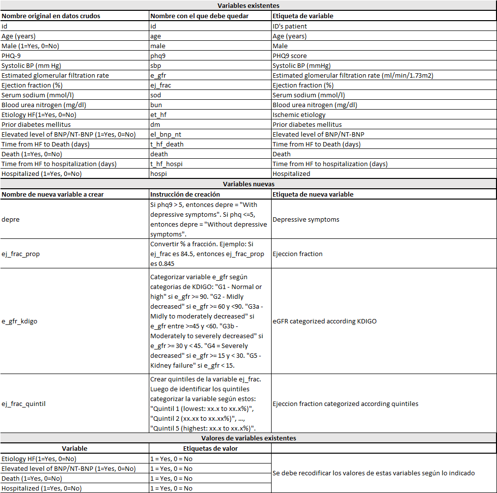
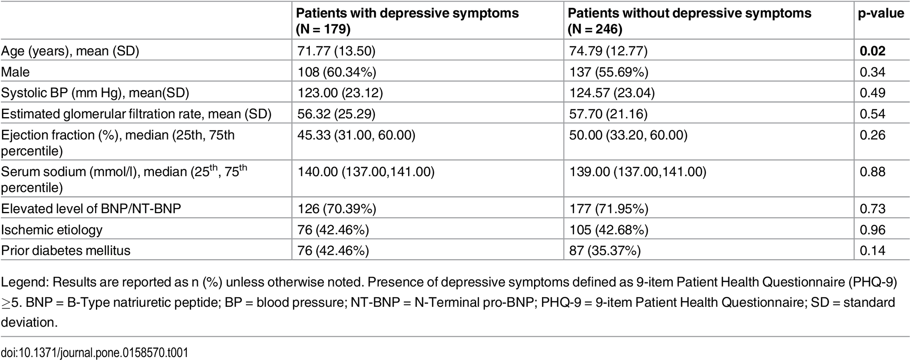

# Escriba aquí el códigoExamen Final
Alumnos:
A continuación listará todos los nombres de los estudiantes del curso que participaron en la resolución de este trabajo.
[Agregar nombre completo de alumno aquí]
[Agregar nombre completo de alumno aquí]
Ejercicios
Ejercicio 0: Configure su proyecto
- Esta sección no requiere que Ud. escriba código.
- Descargue la carpeta
Examen Final. Note que no tiene configurado ningún proyecto de RStudio (no hay archivo*.Rproj). - Cambie el nombre de esta carpeta por el siguiente:
examen_final_grupo#. - Configure el proyecto de RStudio en esta carpeta.
- Renderice este
qmdpara verificar que todo funciona correctamente.
Ejercicio 1: Cargue los paquetes que usará. Comentar con # al lado de cada paquete un resumen breve de para qué lo usarán
Nota: Todos los paquetes que usará deberán estar en este chunk, no en otro chunk posterior
Ejercicio 2: Importe los datos
Los datos se denominan "pone.0158570.s002_modified.xlsx" y se encuentran en la siguiente carpeta compartida Enlace aquí. Llame a los datos importados: “datos_crudos_grupo#”.
Sobre el nombre de sus datos
- Cada grupo tiene un número asignado.
- Usted deberá remplazar el símbolo de michi numeral # por el de su número.
- Por ejemplo, si somos el grupo 4, deberá llamarse
datos_crudos_grupo4.
# Escriba aquí el códigoEjercicio 3: Haga un inspección global de los datos
- Dé un vistazo a los datos. Describa brevemente sus resultados.
# Escriba aquí el código- Obtenga un resumen global superficial de los datos. Describa brevemente sus resultados.
# Escriba aquí el código- Obtenga una descripción un poco más detallada variable por variable de los datos. Describa brevementesus resultados.
# Escriba aquí el códigoEjercicio 4: Procese los datos según el siguiente diccionario

En un solo pipeline, haga lo siguiente:
- Renombre variables.
- Recodifique las etiquetas de las variables categóricas.
- Cree las nuevas variables.
- Etiquete a las variables.
Debe guardar los datos finales (que hayan seguido los procesos indicados) como
datos_proc.
# Colocar aquí el pipeline (borrar este comentario)Ejercicio 5: Identifique duplicados
En estos ejercicos deberá trabajar sobre los datos procesados previamente.
- Identifique duplicados de fila. Describa brevementesus resultados.
# Escriba aquí el código- Identifique duplicados de id. Describa brevemente sus resultados.
# Escriba aquí el código- Solo si hubo duplicados de fila, elimine los duplicados de fila, quedándose solo con una versión de cada observación. Comente el proceso/razonamiento.
Tip: Puedes usar distinct()
# Escriba aquí el código- Solo si hubo duplicados de id, elimine el duplicado de fila que menos información completa tenga. Comente el proceso/razonamiento.
Tip: Puedes usar slice() o filter()
# Escriba aquí el código- Debe guardar los datos que hayan sido limpiados de duplicados como
datos_nodup.
Ejercicio 6: Identifique datos perdidos
En estos ejercicos deberá trabajar sobre los datos procesados previamente.
- Presente el número de datos perdidos y tasa de completitud variable por variable en una sola salida. Describa los resultados relacionados a datos perdidos.
# Escriba aquí el código- Muestre gráficos de datos perdidos y como se agrupan entre variables.Describa los resultados relacionados a datos perdidos.
# Escriba aquí el código- Debe guardar los datos que hayan sido limpiados de datos perdidos como
datos_limpios.
Ejercicio 7: Haga las siguientes consultas (“queries”) con los datos limpios (renombrados, etiquetados y sin duplicados)
- Seleccione las variables id, age y phq-9. Muestre los participantes que tienen edades entre 50 y 55 años
# Escriba aquí el código- Seleccione las variables id, ej_Frac, sod, bun y et_hf. Luego, muestre a los participantes que tiene etiología isquémica.
# Escriba aquí el código- ¿Quiénes fueron los pacientes mujeres que sobrevivieron y tuvieron un phq-9 > 10?
# Escriba aquí el código- ¿Cuáles fueron los valores de tiempo a muerte en los pacientes varones que murieron, que tuvieron etiología isquémica y un puntaj de phq-9 > 10?
# Escriba aquí el códigoEjercicio 8: Haga los siguientes gráficos
En estos ejercicos deberá trabajar sobre los datos procesados previamente.
- Mediante un gráfico de cajas, compare los valores de ejection fraction (%) entre los pacientes con etiología isquémica versus sin etiología isquémica. Muestre el resultado más simple posible.
# Escriba aquí el código- Mediante un gráfico de cajas, compare los valores de ejection fraction (%) entre los pacientes con etiología isquémica versus sin etiología isquémica. Muestre el resultado más elaborado posible: Elija un tema de su agrado, agregue etiquetas (título general, título de eje X, título de eje Y, etiquetas de leyenda si aplica), modifique la escala de colores, etc. Guarde este gráfico como
plot1e imprima su resultado
# Escriba aquí el código- Use un gráfico de cajas y puntos dispersos (combinelos), para mostrar el nivel de bun según sexo. Muestre el resultado más simple posible.
Tip: use geom_jitter() para los puntos dispersos. Más info aquí: https://ggplot2.tidyverse.org/reference/geom_jitter.html
# Escriba aquí el código- Use un gráfico de cajas y puntos (combinelos), para mostrar el nivel de bun según sexo. Muestre el resultado más elaborado posible: Elija un tema de su agrado, agregue etiquetas (título general, título de eje X, título de eje Y, etiquetas de leyenda si aplica), modifique la escala de colores, etc. Guarde el gráfico como
plot2e imprimalo
Tip: use geom_jitter() para los puntos dispersos. Más info aquí: https://ggplot2.tidyverse.org/reference/geom_jitter.html
# Escriba aquí el código- Fusione
plot1yplot2de tal form que plot1 esté encima de plot2.
Tip: use funciones de patchwork para esamblar gráficos: https://patchwork.data-imaginist.com/index.html
# Escriba aquí el código- Fusione plot1 y plot2 de tal form que plot1 esté al costado y a la izquierda de plot2. Agreguele una letra mayúscula a cada plot (p. ej., A, B). Guarde esto como
plot_final.
Tip: use funciones de patchwork para esamblar gráficos: https://patchwork.data-imaginist.com/index.html
# Escriba aquí el código- Guarde el gráfico
plot_finalde manera reproducible usando ggsave(). El gráfico debe tener 12 cm x 12 cm y 900 dpi. Ajustar la escala de tal manera que se vea visualmente apropiado. El formato debe ser png.
Tip: use funciones de patchwork para esamblar gráficos: https://patchwork.data-imaginist.com/index.html
# Escriba aquí el código- Imprima el png guardado usando la función de {knitr} denominda include_graphics()
# Escriba aquí el códigoEjercicio 9: Exporte los datos a los siguientes formatos. Llame a los datos exportados: “datos_limpios”
- Formato de R: “.rds”
# Escriba aquí el código- Formato de Excel: “.xlsx”
# Escriba aquí el código- Formato de archivo plano: “.csv”
# Escriba aquí el código- Formato de Stata: “.dta”
# Escriba aquí el códigoEjercicio 10: Recicle código reproducible
En estos ejercicos deberá trabajar con un nuevo conjunto de datos.
- Importe los datos denominados
"pone.0158570.s002_modified.xlsx"que se encuentran en la siguiente carpeta compartida Enlace aquí. Llame a los datos importados: “datos_original”.
# Escriba aquí el código- Recicle el código creado en el
ejercicio 4para procesar los datos. Guarde los datos comodatos_limpios2. Recuerde que todo debe estar en un solo pipeline
# Escriba aquí el códigoEjercicio 11: Replique la tabla 1 del artículo
Replique la Tabla 1 del artículo publicado. Su tabla debe tener las mismas variables, las mismas etiquetas de variables y debe también usar los mismos estadísticos de resumen que usaron.
La tabla puede encontrarse en el artículo original: https://journals.plos.org/plosone/article?id=10.1371/journal.pone.0158570. La colocamos en esta sección por comodidad:

# Escriba aquí el códigoEjercicio 11: Mejore la tabla 1 del artículo
Haga las siguientes mejoras:
- Agregue una columna de total adicional.
- Haga que todas las variables numéricas reporten
mean ± SD,median (25th, 75th percentile)ymin, max. Cada una de estas en filas diferentes. - Agregue las variables
e_gfr_kdigoyej_frac_quintila las tabla 1. Cada una de estas variables debe estar debajo de su respectivamente variable numérica. Por ejemplo,e_gfr_kdigodebe estar debajo dee_gfr. Asegurarse que las categorías reportadas en la tabla sigan el orden de menor a mayor valor de categorías. - Elimine los valores p.
# Escriba aquí el códigoEjercicio 12: Exporte la tabla
Haga las siguientes mejoras:
- Exporte la tabla a un archivo MS Word
# Escriba aquí el código- Exporte la tabla a un archivo MS Excel
# Escriba aquí el códigoEjercicio 13: Reflexione y responda
- Revise las recomendaciones STROBE acerca de cómo describir las características de los participantes https://journals.plos.org/plosmedicine/article?id=10.1371/journal.pmed.0040297 (13. Descriptive Data, página 15 y 16 del PDF). Respecto al uso de valores p en tablas comparativas descriptivas de estudios observacionales, ¿deberían usarse o no?.
[Elimine esto y remplacelo por su respuesta]
- ¿Por qué cree Ud. que, a pesar de ser una mala práctica reportar valores p en tablas descriptivas comparativas, esta sigue siendo una práctica muy frecuente en publicaciones biomédicas? ¿Qué se podría hacer para mejor esto?
[Elimine esto y remplacelo por su respuesta]
Ejercicio 14: Renderice el archivo .qmd final
Comparta la carpeta entera comprimida según las instrucciones dadas al inicio de este instructivo. Recuerde que su carpeta debe tener el código .qmd, así como su salida renderizada en *.html.